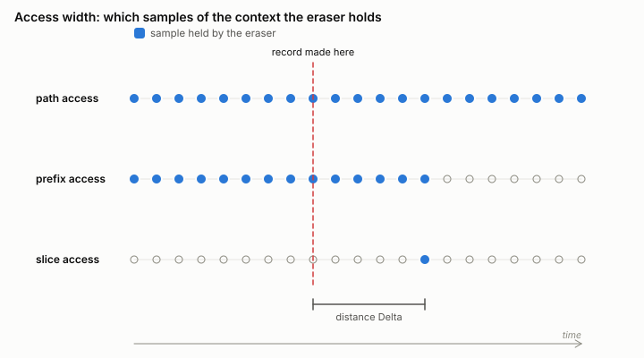

Chapter 27 — Access Width: Staleness, Processes, and Causal Erasure
Chapter 25 priced the reset of a stored record against a context the eraser holds, and
Chapter 26 priced serving two consumers from one record. Both were static: the source
was memoryless and the context was simultaneous with the record. Chapter 19 put a clock
on certificates. This chapter puts a clock on the reset. It covers four ledger rows:
GO-12 [predicted], GO-13 [demonstrated], GO-14 [predicted], and a measurement on a
serving stack (registration 077) whose two sealed predictions came out one
[demonstrated] and one [refuted]. The rows are long because they record what was
corrected, and those corrections are reported here beside the statements they changed.
One caution on scope applies to the whole chapter. The spectral theorems hold for a
circulant (periodic) embedding of the process, and their transfer to ordinary finite
windows is imported with four lemmas that are not proved. The sources are problem
statements and two paper skeletons with open placeholders
(paper/paper-VI-spectral-conditional.tex, paper/paper-VII-dynamic-tax.tex).
The setting
The context is a stationary first-order autoregressive process $V$ with pole $a\in(0,1)$ and unit variance. The consumer’s read is $Y_t=\rho V_t+N_t$, also of unit variance, with $N_t$ independent noise. The eraser (the holder of Chapter 24, now the party that resets the record) observes $S_s=V_s+U_s$ with white noise of variance $\tau^2$. The record $\hat Y$ plays the role of the description $\hat X$; its mean squared error against the read is at most $D$. Write $T=(V,Y)$. The cost coordinate is the per-symbol conditional information
$$ L \;=\; \lim_{n\to\infty}\frac1n\, I\big(T^n;\hat Y^n \mid S^n\big), $$
and $kT\ln 2\cdot L$ is the ideal reset work per symbol under the physical model of Chapter 25. The functional $L$ is not new: at the single-letter level it is Gray’s conditional rate-distortion function (1972, 1973), and the existence of the per-symbol limit is Leiner and Gray (1974). Conditional leakage as a coordinate comes from secure source coding (Villard and Piantanida 2013; Ekrem and Ulukus 2013; Chapter 24).
The static building block is the function of Chapter 26’s ledger row GO-11
[replicated]: $\tfrac12\log_2 g^\star(\rho^2,s,D)$, where $g^\star$ is the larger root
of $Dsg^2-(D+s-\rho^2)g+(1-\rho^2)=0$ and $s=1+\tau^2$ in the static case.
Staleness is access width, not delay (GO-12)
Suppose the context the eraser holds is aged by $\Delta$ steps. The question is whether
the age itself costs anything. The answer in ledger row GO-12 [predicted]
(registration 065) is that it depends on how much of the context path the eraser can
reach.
Path access. If the eraser holds the whole observation path, pure delay is free. In the circulant embedding, with $P$ the cyclic shift and $S^{(\Delta)}=P^\Delta V+U$,
$$ \big(Y,V,S^{(\Delta)}\big)\;\overset{d}{=}\;\big(Y,V,P^{\Delta}S^{(0)}\big), $$
and since $P^\Delta$ is a bijection, every conditional functional that depends on $S$ only through the information it generates, $L$ included, is exactly independent of $\Delta$ at every $n$. On finite windows the deviation is an edge term of order $1/n$. The governed harness measured the invariance at $3.3\times10^{-16}$. The draft stated this as invariance of a conditional covariance; the fresh-context audit (VI-28) showed that form is weaker and replaced it with the identity above, and fixed a transpose error. Invariance under recoding of the conditioning variable is folklore, and the phenomenon at the level of rates is in print for memoryless pairs (Simeone and Permuter 2013; Matsuta and Uyematsu 2014). The ledger records as new only the packaged finite-$n$ identity for a conditioner that is neither encoder nor decoder.
Slice access. If the eraser holds one time-local sample, staleness costs, and the cost is the static function with a substitution fixed by what the encoder may use. A record built from $(Y_t,V_t)$ alone pays at $(\rho,\; s/a^{2\Delta})$. A record granted the latent at the context’s epoch pays the strictly smaller value at $(\rho a^{\Delta},\;\tau^2)$; the gap reaches $0.053$ bits on the probe grid. Both increase strictly in $\Delta$ to the common limit $\tfrac12\log_2(1/D)$. The first draft assigned the second formula to the first kind of record. The audit before the seal refuted that pairing and supplied the corrected derivation (VI-28, pass 1: “FAIL as drafted”); both pilots are disclosed. The substitution device itself is prior work (Simeone and Permuter 2013; Sun and Cyr 2018 for the staleness form in the age-of-information literature). What the ledger records as new is the third-party conditioner and the dependence of the substitution on the encoder’s access.
This is the link to Chapter 25. The age dependence measured in ledger row GO-8
[replicated] (which carries its own caveat, a post-hoc fix to a control statistic in
registration 053) is the operational face of the slice class. Chapter 19’s ageing
certificate is the same situation seen from the consumer’s side: a time-local sample.
The conditional-variance reduction (Theorem 1, registration 066). For single-letter records, $D\in(0,1)$, and any context $\sigma$-algebra $\mathcal G$ generated by a nonempty subset of the observations $\{S_s\}$,
$$ L_{\mathcal G}(D)\;=\;\tfrac12\log_2 g^\star\!\Big(\rho^2,\;\frac{1}{1-q_{\mathcal G}},\;D\Big), \qquad q_{\mathcal G}=\operatorname{Var}\big(V_t\mid\mathcal G\big). $$
The whole access class enters through one number. The hypotheses are essential: a $\mathcal G$ correlated with the read noise breaks the sufficiency step. For slice, causal prefix and full path at equal lag, $q$ is the single-sample variance $1-a^{2\Delta}/(1+\tau^2)$, the Kalman fixed-lag smoother variance, and the noncausal Wiener error, so
$$ L_{\mathrm{slice}}(D,\Delta)\;>\;L_{\mathrm{prefix}}(D,\Delta)\;>\;L_{\mathrm{path}}(D), $$
with the prefix-to-path gap equal to $C^{2\Delta}(P_f-q_{\mathrm{path}})$ in the paper’s Riccati quantities $P_f$ and $C\in(0,1)$, never zero. $W(\Delta)=kT\ln2\cdot L_{\mathrm{prefix}}(D,\Delta)$ is the row’s dynamic conditional-Landauer curve: the work falls geometrically as the eraser is allowed to wait. The audit passed this theorem with five sharpenings. Optimality over all records is imported from the static converse of GO-11, not proved again. The Kalman and Wiener forms are classical, and the physics framing inherits del Rio and co-authors, Sagawa and Ueda, and Still and co-authors.
The spectral conditional rate-distortion function (registrations 070, 071). For block records at the work endpoint, in the circulant embedding with Gaussian records, the discrete Fourier modes are independent static problems and
$$ L_n(D)\;=\;\min_{\frac1n\sum_k D_k=D}\;\frac1n\sum_k \tfrac12\log_2 g^\star\!\big(\rho_k^2,\;s_k,\;D_k/S_{Y,k}\big), $$
with $\lambda_k$ the context eigenvalues, $S_{Y,k}=\rho^2\lambda_k+(1-\rho^2)$,
$\rho_k^2=\rho^2\lambda_k/S_{Y,k}$ and $s_k=1+\tau^2/\lambda_k$. The allocation is
equal-slope; per-mode convexity is proved; $\tau^2\to\infty$ recovers classical reverse
water-filling and a flat spectrum recovers the static theorem. The weighted version
(071) decomposes the same way at every weight $w\in[0,1]$, each mode carrying the two
water levels of GO-11 under one common distortion price. The conjecture had said “a
common pair of Lagrange prices”; that phrasing is refuted as phrased and rescoped to the
pair (weight $w$, price $\mu$). Both theorems are [predicted] under row GO-12 and are
proved at circulant scope only. On finite windows the numerics converge at order $1/n$,
which the paper calls support and not a proof. The decomposition generalizes Gray’s
equal-slope theorem; the novelty sweeps did not find the spectral form for jointly
stationary pairs, with library checks still owed (Gray 1973 in the journal text, Leiner
and Gray 1974, Wyner 1976 to 1978).

Figure 27.1. Three kinds of access the eraser can have to its observation path, with the record made at the marked time. With path access it holds every sample, and delay alone costs nothing. With prefix access it holds every sample up to a horizon. With slice access it holds a single sample at a distance Delta from the record, and the cost rises with Delta. What ages a context is how little of the path is held, not the delay.
The dynamic complementarity tax (GO-13)
Chapter 26’s tax is the excess of the joint cost over the better single-consumer cost. With an ageing context the work-side tax becomes a function of the eraser’s access:
$$ \mathrm{CT}_W(\mathcal G)\;=\;L_{AB}(\mathcal G)-\max\big(L_A(\mathcal G),L_B(\mathcal G)\big). $$
Ledger row GO-13 is [demonstrated], on registrations 067, 068, 069, 072, 073, 074.
Theorem 1, the matrix reduction (067). For two consumers and single-letter records, under joint Gaussianity, record noise independent of $(T,\mathcal G)$, the conditional-independence embedding $\operatorname{Cov}(T,V_s)=\operatorname{Cov}(T,V_t)\,a^{\lvert t-s\rvert}$, and $w\in[0,1]$, the access enters every coordinate only through
$$ \Sigma_{T\mid\mathcal G}\;=\;\Sigma_T-(1-q_{\mathcal G})\,cc^{\mathsf T},\qquad c=\operatorname{Cov}(T,V_t). $$
With a scalar context, both taxes are functions of $q_{\mathcal G}$ alone: access classes with equal $q$ pay identical taxes. The coordinates are nondecreasing in $q$ and $\mathrm{CT}_W\to\mathrm{CT}_R$ as $q\to1$. The universality is scoped to scalar context. The verifier’s counterexample for context dimension $r\ge2$ is on record (equal trace of the conditional covariance, coordinates differing by $0.12$).
Theorem 2, the envelope sign law (068). The first version claimed the tax is monotone in staleness. The audit before the seal refuted it (a regime where the tax increases by 0.16 nats, and a kink where the binding consumer switches). The settled statement, by Danskin’s theorem, is
$$ \frac{d\,\mathrm{CT}_W}{dq}\;=\;\frac{1-w}{2\ln 2}\Big[(Ac)^{\mathsf T}M_1^{-1}(Ac)-s_{\mathrm{binding}}\Big], $$
where the joint record is $\hat{\mathbf Y}=AZ+N$ in GO-11’s whitened coordinates,
$M_1=A\Lambda A^{\mathsf T}+\Sigma_N$ is its covariance given the context ($\Lambda$ the
whitened conditional covariance, $\Sigma_N$ the record noise), both at the optimal
channel, and $s_{\mathrm{binding}}$ is the same sensitivity for the binding consumer.
Staleness raises the tax exactly when the joint record couples to the context more than
the binding consumer’s does. The kink at a switch is always downward, and at
$w=1$ the curve is flat. The global regime map is open. An unregistered 18-point sweep
([exploratory]) refutes the reading “rises iff the binding consumer is context-poor”
at 6 of 18 points, and no statement here rests on it.
The operational face (069). At the rising instance the tax rose by $+0.090$ under staleness against $+0.086$ predicted, and equal-$q$ classes agreed to $0.001$. The first governed run failed one instrument gate (one uniform-control cell of 216) with the five physics gates passing; the rerun, under a dated amendment with every bar unchanged, is the result quoted, and the as-executed file is kept.
Theorem 3, the binary twin (072). For a binary symmetric pair with a Markov context, the slice collapses exactly to the static binary function at $q_{\mathrm{eff}}=q*\delta_\Delta$, and the optimal family survives every finite access class through the posterior reliability distribution. Single-$q$ universality fails exactly, by about $9\times10^{-5}$ (checked at 50 digits), although it nearly holds numerically. Equal-$q$ universality is a Gaussian property.
Theorems 4 and 5 (073, 074). The two-consumer spectral theorem gives per-frequency matrix water levels under two common prices, one per distortion constraint, at circulant scope. The static kernel is prior work (Xiao and Luo 2005; Stylianou, Charalambous and Charalambous 2021, 2024); the row claims the spectral lift, the conditional face and the third-party conditioner. The moment-convexity lemma proves that $G(C,V)=\log\det(V-C^{\mathsf T}QC)-\log\det(V-C^{\mathsf T}PC)$ is jointly convex for $P\succeq Q\succeq0$, which makes the weighted two-consumer program convex in moments, resolves the uniqueness flag on GO-11’s Theorem 9, and makes the two-price rule globally optimal. The convexity ingredients are standard (Boyd and Vandenberghe; Ando 1979); the contribution recorded is the lift into moment coordinates.
Causal erasure (GO-14)
GO-12 settled a causal eraser for one record. Ledger row GO-14 [predicted]
(registrations 076 and 078 to 086) treats block records erased cell by cell, where the
eraser of cell $t$ holds the context up to $t+\Delta$ and the cells already erased:
$$ L_a(\Delta)\;=\;\frac1n\sum_{t=1}^{n} I\big(T^n;\hat Y_t \mid S^{t+\Delta},\hat Y^{t-1}\big). $$
Two other definitions were rejected: a memoryless eraser (a floor of 0.0136 bits, and inconsistent with the chain rule) and the causally conditioned directed information of Kostina and Hassibi, which collapses in Gaussian settings. A novelty sweep for this framing is owed before any novelty language (Kramer; Lev and Khina; the nonanticipative line).
The record family is a hard hypothesis. Every statement below is for Gaussian records independent of the eraser’s observation noise $U$. Outside the family the chain rule fails (by up to 4.59 bits) and the ordering below inverts; counter-values 0.539536 and 0.092864 are on record.
The chain rule (076).
$$ n\,L_a(\Delta)\;=\;I\big(T^n;\hat Y^n\mid S^n\big)+C_\Delta,\qquad C_\Delta=\sum_t I\big(\hat Y_t;S_{>t+\Delta}\mid S^{t+\Delta},\hat Y^{t-1}\big)\;\ge 0 . $$
$C_\Delta$ is the smoothing-leakage charge, the price of erasing before the rest of the context arrives. It is zero exactly when the record can be simulated causally from $S$ at lag $\Delta$. The first conjecture, that no useful record collapses, was false: records built from $N$ alone collapse while carrying bits. The corrected statement is about feasibility. Below $D=\rho^2(n-\Delta-1)/n$ the distortion budget forbids every collapsing record, and at the bound one exists.
The ordering. $\mathrm{block}_n<\min L_a(\Delta)\le L_a^{\mathrm{diag}}(\Delta)<\mathrm{slice}(\Delta)$, with the upper bounds strictly decreasing in $\Delta$ (version 0.1 said increasing, a sign error) and the lower margin closing at rate $\lambda_s^{2\Delta}$, where $\lambda_s=a(1-K)$ is the Kalman smoothing pole. The diagonal class is provably beaten, so every quoted minimum is an upper bound, and the seal forbids calling 0.572255 “the minimum”. The pole statement is local to time-local records ($\lambda_s^{-2}=7.955$ at the tested parameters); code-mixing records decay more slowly, and that rate is open. The value $\mathrm{block}_\infty=0.529950$ carries a dated erratum.
Convexity (079). In the moment coordinates $H=\operatorname{Cov}(\hat Y,W)$, $\Gamma=\operatorname{Cov}(\hat Y)$, with $W=(V^n;Y^n)$, the family program is jointly convex for any nondecreasing access schedule, so every stationary point is the global family minimum and the finite-$n$ anchors are certified two-sided, under disclosed floating-point certificates. Convexity holds for the regrouped sum only. Per-cell convexity was tested and refuted for every cell after the first (086), with an exact rational witness.
The process limit (080 to 085). The limit $L^\infty(\Delta)$ exists unconditionally, by subadditivity under block concatenation and Fekete’s lemma. A proposed bound on the boundary charge was refuted, and the route that depended on it was left conditional. A different chain (082, with its convexity step proved in 083) gives an unconditional lower bound $L^\infty(\Delta)\ge\Psi(D;\Delta)$ at $\Delta=0,1,2$, where $\Psi$ is a stationary spectral value held as a certified bracket. An explicit feasible record on a 2048-cell window gives the other side (084):
$$ L^\infty(0)\in[0.5627264963,\,0.5627656412],\quad L^\infty(1)\in[0.5364013784,\,0.5364458112],\quad L^\infty(2)\in[0.5310500198,\,0.5310994872]. $$
These brackets are the quotable numbers. Registration 085 adds the equality $L^\infty(\Delta)=\Psi(D;\Delta)$ at those three lags as a scoped theorem with five named inputs, one of them a classical citation whose hypotheses were checked and whose proof was not redone. In reaching it, one supporting lemma (Lemma M) was sealed restated, with two of its claims withdrawn. The row is explicit that “unconditional” attaches to the one-directional chain, not to the equality or to any value of $\Psi$, and that the equality is not a licence to quote a value as exact.
A measurement on a serving stack (077)
The fourth row tests the idea outside the Gaussian model: eviction from the key-value cache of a language model (Qwen2.5-7B) at matched budget. The successor arc is recorded with its losses: registration 056 was a miss, registration number 075 was burned on a disclosed design failure, and 077 was sealed before the run.
P1 [demonstrated]. Task quality tracks the measured predictive uncertainty $u$
about the consumer’s future reads, not the nominal width of the scorer. A 32-query
snapshot beat a 1024-query scorer by $+0.4375\pm0.070$ at 5% keep (bar 0.30) and
survived 97% eviction with no drop, while wide-window scoring was statistically
indistinguishable from random eviction at extreme budgets. The limits: one governed run
(tier B, $n=64$), a binary task metric, passage retrieval only, and 89 thermal duty
cycles disclosed.
P2 [refuted] as sealed. The control predicted that equal scalar $u$ gives equal
quality. It did not: the equality gate failed ($+0.078$ against a tolerance of 0.0625)
and the registered contrast was $+0.359\pm0.068$, 5.3 standard errors, with calibration
well inside its gates. Equal scalar uncertainty is insufficient; the structure of the
error matters. The row reads this as consistent with GO-13 Theorem 1’s own scoping,
where equal-$q$ universality fails once the context has dimension two or more. The
verdict was 5 of 6 gates, with the failure on the branch the registration had named as a
finding.
What is open
- Toeplitz transfer of the spectral theorems (GO-12 registrations 070 and 071; GO-13 Theorem 4): open. The four transfer lemmas are imported, not proved.
- The spectral-tilt conjecture (GO-12): open, unregistered.
- Library checks for GO-12’s attribution (Gray 1973, Leiner and Gray 1974, Wyner 1976 to 1978): owed.
- The global regime map for the tax’s sign (GO-13): open; only an
[exploratory]sweep exists. - Operational faces beyond 069 (the kink, the two-price spectral face, prefix and path access, the binary twin) and the price rule for $m$ consumers: open.
- GO-14: uniqueness of the minimizer, the reset-protocol construction that would
make $L_a$ operational, the decay rate for code-mixing records, the closure constant
beyond $\Delta\approx6$, and the novelty sweep. Records coupled to the eraser’s noise
are a different and cheaper coordinate; a problem statement on them
(
paper/go15-reference-coupled.tex) is exploratory work with no ledger row and no result claimed here. - A successor to 077 that matches the profile of uncertainty and not its scalar value: named as a candidate, not drafted.